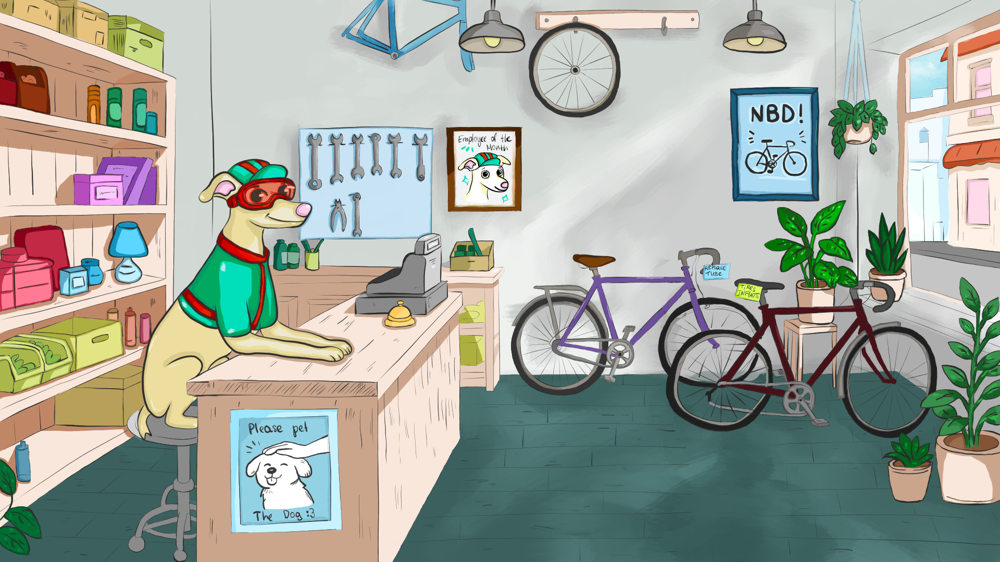

Всё началось с концепта велосипедного магазина. Сайты с велосипедами часто заставляли меня думать не о том, какой байк мне нужен, а о том, как вообще работает этот фильтр. Я нарисовала маскота, начала собирать интерфейс — а потом поняла, что этот пёсик должен жить в игре.
От магазина к мастерской
Kadence стала историей про клиентов, которые приходят не просто купить велосипед. У каждого есть конкретная боль, бюджет и иногда очень специфическое представление о счастье на двух колёсах.
AI как инструмент, а не автор
Я отвечала за идею, дизайн, документацию, контент, продуктовую логику и тестирование. Агент помогал превращать решения в код: сначала каркас, затем диалоги, сборка, scoring, сохранения и деплой. Репозиторий с GDD, scripts, item database и UX/UI guidelines был источником контекста.
AI не снял с меня ответственность за продукт. Он просто помог добраться до той части работы, до которой раньше не хватало технических рук.

Что я вынесла
На бумаге математика работает идеально. В билде игрок видит не формулу, а ощущение: понятна ли цель, справедлива ли ошибка, хочется ли попробовать ещё раз. Поэтому после релиза я провожу отдельный gameplay-аудит и собираю фидбек.